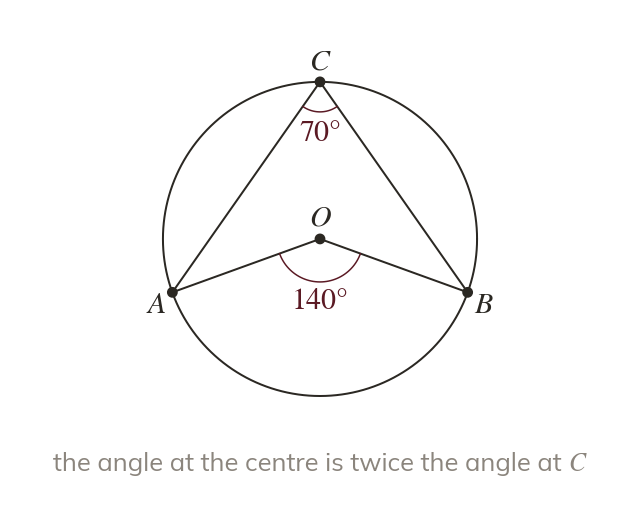

Angle at the centre
The angle at the centre is twice the angle at the circumference. Both must stand on the same arc.
The angle at the centre of a circle is twice the angle at the circumference, when both angles stand on the same arc. "Stand on the same arc" means both angles are drawn from the same two points on the circle out to a third point (or the centre).